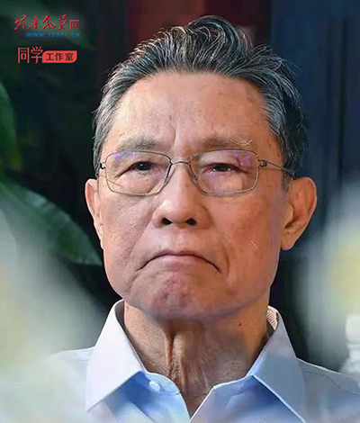
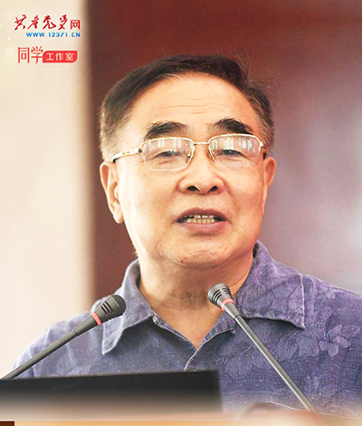
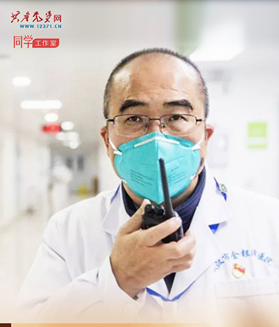
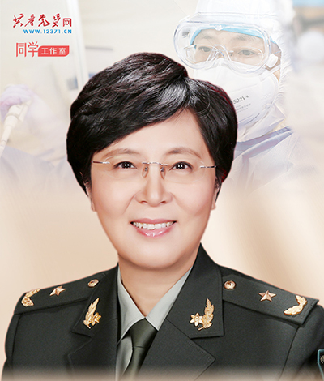

钟南山
钟南山，男，汉族，中共党员，1936年10月生，福建厦门人，广州医科大学附属第一医院国家呼吸系统疾病临床医学研究中心主任，中国工程院院士，第十一、十二届全国人大代表，第八、九、十届全国政协委员。

张伯礼
张伯礼，男，汉族，中共党员，1948年2月生，河北宁晋人，中国工程院院士，第十一、十二、十三届全国人大代表。他长期致力于中医药现代化研究，奠定中医素质教育和国际教育的标准化工作基础，推动中医药事业传承创新发展。

张定宇
张定宇，男，汉族，中共党员，1963年12月生，河南确山人，武汉市金银潭医院院长。他长期在医疗一线工作，曾带队赴汶川抗震救灾，多次参加国际医疗援助。荣获“全国卫生健康系统新冠肺炎疫情防控工作先进个人”称号。

陈薇
陈薇，女，汉族，中共党员，1966年2月生，浙江兰溪人，军事科学院军事医学研究院生物工程研究所所长、研究员。第十二届全国人大代表，第十三届全国政协委员。为疫情防控作出重大贡献。荣获“全军防治非典先进个人”“全国十大杰出青年”等称号。/p>